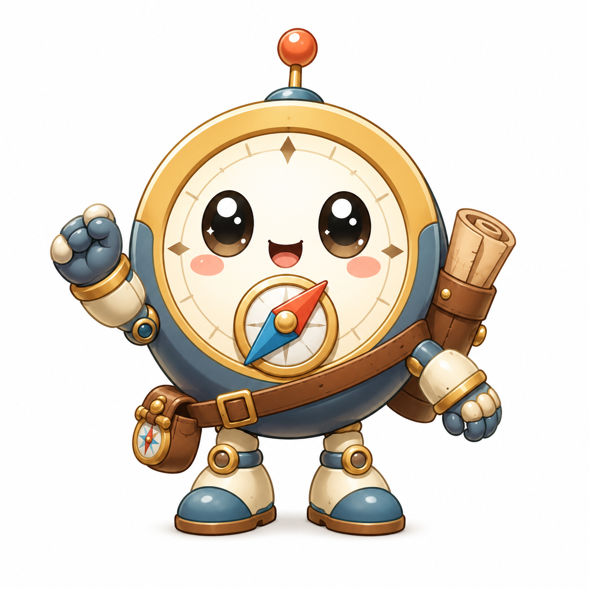

AI生成データを安全にWeb公開する仕組み：自動化と品質を両立する設計術
AIで生成したJSONデータをWebサイトへ安全に公開するための設計手法を解説。入力検証からHTMLエスケープ、失敗時の停止処理まで、初心者でも実装可能な品質管理のコツを紹介します。

AI × GAME DEVELOPMENT
AIとゲーム制作の実験、失敗、改善を記録する研究所
AIで生成したJSONデータをWebサイトへ安全に公開するための設計手法を解説。入力検証からHTMLエスケープ、失敗時の停止処理まで、初心者でも実装可能な品質管理のコツを紹介します。

AIを活用してゲームや漫画、創作分野の記事を月間まとめから電子書籍にする際、似た説明の重複を整理し、章ごとに再構成する具体的な手順を初心者向けに解説します。具体例や失敗例も交え、実践的な編集方法を紹介。

小説のストーリーを漫画化する際、コマごとに登場人物を管理する具体的な方法を紹介します。初心者でも試せる手順や失敗例、改善策を交えて、効率的かつ正確なキャラ配置を実現しましょう。

AIが書いたゲーム記事の校閲で重要な、公開用文章と内部メモを明確に分離する方法を具体例と手順で解説します。初心者でも実践しやすい失敗例や改善例も紹介し、効率的かつ誤情報を防ぐポイントに絞った内容です。

漫画の読み順が自然に伝わるコマ割りの基本ルールを、視線の流れやページめくりを意識した具体例を交えて解説します。初心者でもすぐ実践できる配置のコツや失敗例の改善方法を紹介し、読みやすい漫画作りをサポートします。

Pythonの画像処理ライブラリPillowを使って日本語テキスト入りのサムネイルを作成する際の具体的な注意点を解説。日本語フォントの指定方法、文字の折り返し、文字サイズ調整、余白の取り方でありがちな失敗例と改善策を豊富なコード例とともに紹介します。

AIを活用してゲームのバランス調整案を効率的に得るための具体的な入力表の作り方を解説します。HPや攻撃力、速度、出現階層を表形式で整理し、比較しやすい案を作る手順と注意点も紹介します。

AIのCodexにゲームの修正を頼む際、スムーズに対応してもらうために必要な情報は「再現手順」「期待結果」「実際の結果」「関連ファイル」の4点です。具体例や失敗例を交えて、初心者でもわかりやすく解説します。

AI画像生成でゲームや漫画のキャラクターの顔を一定に保つための具体的な方法を解説。参照画像の活用、固定特徴の指定、差分指示の分け方を具体例とともに紹介し、よくある失敗例と改善策も解説します。

漫画制作で絵の破綻を防ぐために、セリフ量から必要な空白を逆算して吹き出しを先に配置する具体的な手順を紹介。初心者でも実践しやすい方法と失敗例・改善例も解説します。

ゲーム関連のサムネイル作成で、毎回新しいキャラクターを生成せずに、PythonのPillowライブラリを使って固定マスコット画像を安定的に合成する具体的な手順と注意点を解説します。

100階のローグライクゲームで、10階ごとにボスを配置する際の具体的な設計方法を解説。各区間の学習内容を確認しながら段階的に難易度を調整する手順や、失敗例からの改善策も紹介します。

AI生成画像でよく見られる手足の不自然さを減らすための具体的な指示方法と生成後の部分修正手順を、初心者にもわかりやすく解説します。ゲームや漫画、創作に役立つ実践的なコツを紹介。

初心者でも作りやすいWebゲームの基本画面「タイトル」「プレイ」「結果」の3つに絞り、具体的な作成手順や失敗例、改善案を解説します。簡単なコード例とポイントを押さえて、最初のゲーム完成を目指しましょう。

ローグライクゲームにおける敗北後の再挑戦意欲を高めるための成長設計について、引き継ぐ要素とリセットする要素のバランスを具体例と手順で解説します。初心者から中級者のゲーム制作・AI活用者に向け、実践的な方法と失敗例・改善例も紹介。

AIのCodexを使って小規模ゲームを作る初心者向けに、実装前に決めるべき最小限の仕様項目と具体的な手順、失敗例や改善例を解説します。

AIのCodexを使って小規模ゲームを作る際に、実装前に決めるべき最小限の仕様項目を具体例とともに解説。初心者でも迷わず始められるよう、失敗例や改善例も交えてわかりやすく紹介します。

AIを活用して100階層のダンジョン敵配置を設計する具体的な方法を紹介。10階層ごとの役割分担と難易度曲線の考え方、実際の設計例を交え、失敗例や改善ポイントも解説します。

力士の特徴である張り手やまわし、間合いを戦闘システムに落とし込み、初心者でも試せるローグライクゲームの設計方法を具体例と失敗例を交えて解説します。ランごとのランダム強化や敗北後の再挑戦といったローグライク固有の要素も取り入れ、張り手・まわし・間合いの組み合わせによるビルド選択の具体例も紹介します。

AIのCodexを使って小規模ゲームを作る初心者向けに、実装前に決めるべき最小限の仕様項目を具体例と共に解説。無駄を省き、効率よくゲーム制作を進める方法を紹介します。